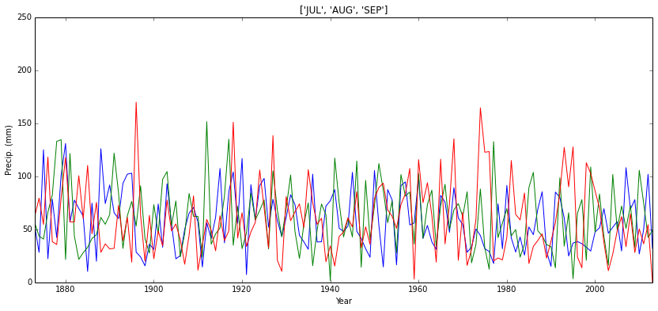
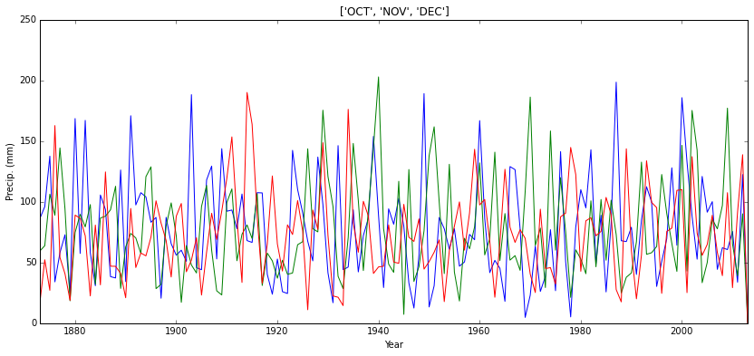
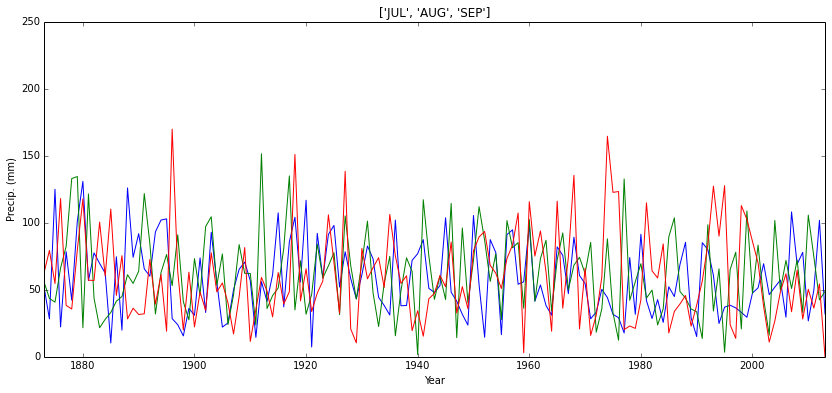
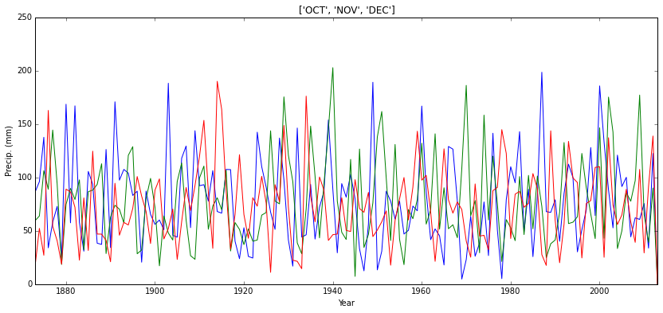
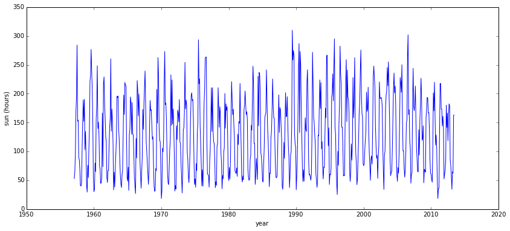
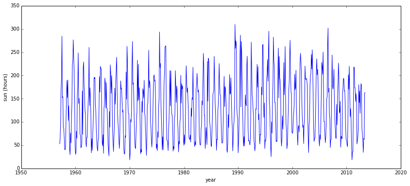

This section of the notes is intended for follow-up after the class and future reference. We will not go through this in detail in the teaching sessions.
This material and the exercises are more advanced than in the main notes. You are not required to do these, but may like to do so if you want to stretch yourself.
A2.1 Binary Operators¶
A2.1.1 Basic Logic¶
Quite often (data masks in data products, being the most typical example), you will need to deal with binary numbers and binary operations, so we will introduce the concepts you need here.
We came across logical or Boolean operations in the main session (with the data type bool). In logic, something can be True or False, and operations such as `not <http://en.wikipedia.org/wiki/Logical_NOT>`__, `and <http://en.wikipedia.org/wiki/Logical_AND>`__ and `or <http://en.wikipedia.org/wiki/Logical_OR>`__ have quite obvious meanings. More generally in logic (and electronics) we may come across other logical operators such as `nand <http://en.wikipedia.org/wiki/Logical_NAND>`__ (not and) and `nor <http://en.wikipedia.org/wiki/Logical_NOR>`__ (not or) and `xor <http://en.wikipedia.org/wiki/Logical_XOR>`__ (exclusive or: either but not both), but these are not defined in Python (they can of course be derived though).
You should first make sure that you understand the results of the and, or and not bool operators:
print 'False and False =',False and False
print 'False and True =',False and True
print 'True and False =',True and False
print 'True and True =',True and True
False and False = False
False and True = False
True and False = False
True and True = True
print 'False or False =',False or False
print 'False or True =',False or True
print 'True or False =',True or False
print 'True or True =',True or True
False or False = False
False or True = True
True or False = True
True or True = True
print 'not False =',not False
print 'not True =',not True
not False = True
not True = False
Exercise A2.1¶
As an exercise for this, you could see if you can simulate the logical combinations xor, nor and nand, e.g.:
# nand test:
# see http://en.wikipedia.org/wiki/Logical_NAND
# (A nand B) is not (A and B)
ABList = [(False,False),(False,True),(True,False),(True,True)]
for A,B in ABList:
print '%s nand %s ='%(str(A),str(B)),not (A and B)
False nand False = True
False nand True = True
True nand False = True
True nand True = False
A2.1.2 Binary¶
Endianness¶
It is of value to have some understanding of binary operations and representation(s):
- you will come across these in encoded data products (such as the QA information in MODIS and other satellite products) as it is a more efficient way of enconding multiple sets of logical information
- this is the form in which the computer ultimately stores and processes information, so it is useful to have some appreciation of that
- you will sometimes need to consider how large a number representation is (e.g. byte or short integer or long integer) as this can impact computer memory and storage requirements
- you may come across different binary representations for different datasets
There are two main number representations used in computing, which depend on the interpretation of the MSB, Most Significant Bit or ‘high bit order’ (or Byte) and LSB, Least Significant Bit or ‘low bit order’ (or Byte).
Which system is used is sometimes refered to as ‘endianness’ so we may refer to a ‘big-endian’ or ‘little-endian’ representation. In a big-endian representation, the left-most byte represents the highest number. In a little-endian system, this is the lowest number.
It is probably easiest to understand this with decimal numbers:
So, in a big-endian decimal representation:
152
represents one hundred and fifty two ((1 x 10^2) + (5 x 10^1) + (2 x 10^0))
In a little-endian system, this is interpreted the other way around, so 152 is (2 x 10^2) + (5 x 10^1) + (1 x 10^0), so is actually two hundred and fifty one.
The term comes from Jonathan Swift’s Gulliver’s travels, if you are interested, refering to the which end of an egg the people of Lilliput and Blefuscu believe you should open:
"(The people of Lilliput and Blefuscu have) been engaged in a most obstinate war for six-and-thirty moons past. It began upon the following occasion. It is allowed on all hands, that the primitive way of breaking eggs, before we eat them, was upon the larger end; but his present majesty’s grandfather, while he was a boy, going to eat an egg, and breaking it according to the ancient practice, happened to cut one of his fingers. Whereupon the emperor his father published an edict, commanding all his subjects, upon great penalties, to break the smaller end of their eggs. The people so highly resented this law, that our histories tell us, there have been six rebellions raised on that account; wherein one emperor lost his life, and another his crown. These civil commotions were constantly fomented by the monarchs of Blefuscu; and when they were quelled, the exiles always fled for refuge to that empire. It is computed that eleven thousand persons have at several times suffered death, rather than submit to break their eggs at the smaller end. Many hundred large volumes have been published upon this controversy: but the books of the Big-endians have been long forbidden, and the whole party rendered incapable by law of holding employments."
Endianness then (like which end of an egg you should break), is ultimately arbitrary, but we must still have conventions so that information on one computer system can be interpreted by another.
At present, probably most computers you use will be little-endian (the ‘Intel convention’ as it has come to be known), but you may also come across data stored in big-endian (so-called ‘Motorola convention’) format.
Endianness is mainly implemented at the byte level, so if you are considering a signle byte, which ‘end you open the egg’ has no consequence.
For longer number representations though (e.g. a 2-byte or 4-byte integer) it can have significant consequences, and you need to be aware of the endianness of data that you might try to be reading. Many file formats will explicitly store the endinaness that data were written in, so a correct interpretation will be handled by low level reading routines. But, if you get binary data that are of more than one byte that look rather odd when you display them, one possible reason is that you have assumed a different endinaness to what the data were written in.
Binary numbers¶
When we are working with binary numbers for a single bit, we represent False by 0 and True by 1.
In Python, these representations can essentially be used interchangably with logical operators, (but we use the function bool() to convert to a boolean representation)
print True or False
True
print 1 or 0
1
print bool(1 or 0)
True
whatTheySay = True
if whatTheySay:
print "it's true what they say ..."
else:
print "it's not true what they say ..."
it's true what they say ...
whatTheySay = 1
if whatTheySay:
print "it's true what they say ..."
else:
print "it's not true what they say ..."
it's true what they say ...
A binary representation of a number is a representation in base 2, where we may use multiple bits to represent numbers.
Some number representations (such as floating point) are stored in a more complicated manner, but ASCII codes for string representation and integers are in a more straightforward binary format.
So, e.g. the (integer) decimal number 3 is 11 in binary (base 2):
3 == (1 * 2**1) + \
(1 * 2**0)
True
We can use the Python function bin() to get this more directly:
print bin(3)
0b11
print 0b11
3
Similarly, the decimal number 101 is 1100101 in binary:
101 == (1 * 2**6) + \
(1 * 2**5) + \
(0 * 2**4) + \
(0 * 2**3) + \
(1 * 2**2) + \
(0 * 2**1) + \
(1 * 2**0)
True
print bin(101)
0b1100101
Exercise A2.2¶
Work out what the following decimal numbers are in binary:
74931272551024
and check your result using the approach we took to confirming 101:
101 == (1 * 2**6) + \
(1 * 2**5) + \
(0 * 2**4) + \
(0 * 2**3) + \
(1 * 2**2) + \
(0 * 2**1) + \
(1 * 2**0)
- How many bits are needed to represent each of these numbers?
- What is the largest number you could represent in: (i) a 32 bit representation; (b) a 64 bit representation?
- Recalling that there are 8 bits in a byte, what is the largest number you could represent in: (a) a single byte; (b) two bytes?
'''
Explorations in binary!
We can represent:
binary numbers, e.g. 0b010101
octal numbers, e.g. 0o755
hexadecimal, e.g. 0x2A2FF
but if we print these,
by default they are printed as the decimal equivalents.
We can convert to binary, octal or hex string with
bin(), oct(), hex()
'''
x = 0b111101101
print bin(x),'is',x,'in decimal'
print bin(x),'is',oct(x),'in octal'
print bin(x),'is',hex(x),'in hexadecimal'
0b111101101 is 493 in decimal
0b111101101 is 0755 in octal
0b111101101 is 0x1ed in hexadecimal
A2.1.2 Bitwise Operators¶
In Python (and most other computer languages) you have access to bitwise operators. As you might expect, these are operators that are executed on individual bits in a binary representation of a number.
The bitwise operators available in Python are:
- & bitwise and
- | bitwise or
- ^ bitwise xor (exclusive or)
- ~ bitwise ones complement
- << bitwise left shift
- >> bitwise right shift
The & operator simply performs a logical and operation on two sets of binary representations, so:
1 & 0 == 0
is the same as a logical True and False operation that we saw above .
The | operator simply performs a logical or operation on two sets of binary representations, so:
1 | 0 == 1
is the same as a logical True or False operation that we saw above.
Similarly,
1 ^ 0 == 1
1 ^ 1 == 0
and
~1 == 0
~0 == 1
These same rules apply then to all bit fields:
~1010 == 0101
etc.
The shift operators are interesting:
left shift by 1, for example is equivalent to multiplying by 2, and right shift by 1 a division by 2.
They are also very useful in sorting out ‘bit masks’ for data products.
'''
Bitwise operators:
'''
A = 521
B = 523
# print as binary:
print A,'\tA:\t',bin(A)
print B,'\tB:\t',bin(B)
# some operations
print '\tA | B:\t',bin(A|B),'\t',A|B
print '\tA ^ B:\t',bin(A^B),'\t\t',A^B
print '\tA & B:\t',bin(A&B),'\t',A&B
521 A: 0b1000001001
523 B: 0b1000001011
A | B: 0b1000001011 523
A ^ B: 0b10 2
A & B: 0b1000001001 521
'''
Bitwise shift operators:
'''
A = 531
print '\tA:\t',bin(A),'\t',A
print '\tA>>1:\t',bin(A>>1),'\t',A>>1
print '\tA>>1:\t',bin(A<<1),'\t',A<<1
print '\tA>>3:\t',bin(A>>3),'\t',A>>3
print '\tA>>3:\t',bin(A<<3),'\t',A<<3
A: 0b1000010011 531
A>>1: 0b100001001 265
A>>1: 0b10000100110 1062
A>>3: 0b1000010 66
A>>3: 0b1000010011000 4248
As an example of data masking, consider the QA mask in the MODIS Leaf Area Index (LAI) product:
Bit number | Parameter Name | Bit combination | Interpretation |
0 | MODLAND_QC bits | 0 | Good quality (main algorithm with or without saturation) |
1 | Other Quality (back-up algorithm or fill values) | ||
1 | Sensor | 0 | Terra |
1 | Aqua | ||
2 | DeadDetector | 0 | Detectors apparently fine for up to 50% of channels |
1 | Dead detectors caused >50% adjacent detector retrieval | ||
3-4 | CloudState | 00 | Significant clouds NOT present (clear) |
01 | Significant clouds WERE present | ||
10 | Mixed cloud present on pixel | ||
11 | Cloud state not defined (assumed clear) | ||
5-7 | CF_QC | 000 | Main (RT) method used (best result possible (no saturation)) |
001 | Main (RT) method used with saturation. (usable) | ||
010 | Main (RT) method failed due to bad geometry (empirical algorithm used) | ||
010 | Main (RT) method failed due to problems other than geometry (empirical algorithm used) | ||
010 | Pixel not produced at all. |
So, the MODIS LAI QA information is contained in one byte (8 bits), which encodes data about five different categories of QA information.
When using such data, we need to make choices about what quality of data we are willing to accept.
How can we use our understanding of bitwise operations to pull out these datasets?
First, we can try to pull out the different categories.
One way to do this is using a set of ‘bit masks’ for each of the bit fields we want to cover.
If then perform a bitwise and operation with these, only relevant bits will ‘show’ through.
# an example QA value: fill all fields
qa = 0b11111111
print 'qa',qa
print 'binary qa',bin(qa)
# set up masks for the different parameters
mask1 = 0b00000001 # bit 0
mask2 = 0b00000010 # bit 1
mask3 = 0b00000100 # bit 2
mask4 = 0b00011000 # bit 3-4
mask5 = 0b11100000 # bit 5-7
qa1 = qa & mask1
qa2 = qa & mask2
qa3 = qa & mask3
qa4 = qa & mask4
qa5 = qa & mask5
print 'qa1',bin(qa1)
print 'qa2',bin(qa2)
print 'qa3',bin(qa3)
print 'qa4',bin(qa4)
print 'qa5',bin(qa5)
qa 255
binary qa 0b11111111
qa1 0b1
qa2 0b10
qa3 0b100
qa4 0b11000
qa5 0b11100000
We gave an example qa value with 1 in all bit fields, and can see that this information has been passed through above, but we still need to remove the trailing zeros to the right of the bit field.
We can easily do this with a right shift operator:
qa1 = (qa & 0b00000001) >> 0 # bit 0
qa2 = (qa & 0b00000010) >> 1 # bit 1
qa3 = (qa & 0b00000100) >> 2 # bit 2
qa4 = (qa & 0b00011000) >> 3 # bit 3-4
qa5 = (qa & 0b11100000) >> 5 # bit 5-7
print 'qa1',bin(qa1)
print 'qa2',bin(qa2)
print 'qa3',bin(qa3)
print 'qa4',bin(qa4)
print 'qa5',bin(qa5)
qa1 0b1
qa2 0b1
qa3 0b1
qa4 0b11
qa5 0b111
And now we see that we have just the information we required.
There are many ways to achieve the same result in filtering such QA masks, but it is quite easy to make a mistake in doing so, so the clearest way to do this is generally as above:
- develop a bit mask with 1 in the required fields
- e.g. mask4 = 0b00011000 # bit 3-4
- e.g. mask1 = 0b00000001 # bit 0
- do a bitwise and (&) between the data and the bit mask
- and right shift the result by the ‘starting’ bit
- e.g. (qa & 0b00011000) >> 3 # bit 3-4
It is always a good idea to test the application of such masks by setting 1 in all fields, as you can easily see if you get the result you should be expecting.
Exercise A2.3¶
Develop some code to repeat the QA bit masking done above, but make the code generate the bit masks itself from knowledge of the first and last of the bit fields you require (assuming they are sequential).
If possible, do this in a function.
Demonstrate its operation with several example bit masks.
A2.2 Exception handling¶
In Python, the mechanism for trapping errors (i.e. when something goes wrong in running a block of code) is:
try:
...
except:
...
e.g.:
a = 1
b = 0
print a/b
---------------------------------------------------------------------------
ZeroDivisionError Traceback (most recent call last)
<ipython-input-20-e0a9b2305aea> in <module>()
1 a = 1
2 b = 0
----> 3 print a/b
ZeroDivisionError: integer division or modulo by zero
a = 1
b = 0
'''
What do we want to happen if we try to divide by zero?
In this case, we decide we want to set the result to zero
'''
try:
print a/b
except ZeroDivisionError:
print 0
0
Note the indentation in the code. This is what defines the heirarchy of conditional statements in Python (rather than some explicit ‘start’ and ‘end’ statements, as in some other languages).
We can trap explicit types of error, e.g.:
x = 100.
del x
try:
print x
except NameError:
print "name 'x' is not defined"
name 'x' is not defined
or we can be non-specific and trap all errors in a code block:
try:
print '2' + 2 # adding a string to integer doesn't make sense
except:
print 'you made an error'
you made an error
You can trap multiple forms of error:
import sys
filename = 'files/data/progress.dat'
try:
f = open(filename)
s = f.readlines()
print s[0]
print s[0]/10
except IOError as e:
# trap a specific IOError
print "I/O error reading from %s"%(filename)
except:
# trap any further errors
print "Error in processing data from file %s"%filename
AS I walk’d through the wilderness of this world,
Error in processing data from file files/data/progress.dat
If you want to know more on this subject, you can follow this up with a more detailed tutorial.
A2.3 More complex splitting examples¶
# We can use separators other than whitespace with split:
data = "1964,1220\n1974,2470\n1984,2706\n1994,4812\n2004,2707"
print "data.split('\\n'):\n\t",data.split('\n')
# note '\\n' in here as '\n' would have printed a newline
# \ is an escape character (as in unix)
data.split('n'):
['1964,1220', '1974,2470', '1984,2706', '1994,4812', '2004,2707']
# using a generator expressions
fdata1 = (i.split() for i in data.split('\n'))
print list(fdata1)
[['1964,1220'], ['1974,2470'], ['1984,2706'], ['1994,4812'], ['2004,2707']]
# two listcomps to split first
# on \n and then each of these on comma
fdata1 = [i.split() for i in data.split('\n')]
fdata2 = [j[0].split(',') for j in fdata1]
print fdata2
[['1964', '1220'], ['1974', '2470'], ['1984', '2706'], ['1994', '4812'], ['2004', '2707']]
fdata1 = [i.split() for i in data.split('\n')]
fdata2 = [j[0].split(',') for j in fdata1]
fdata = [[int(l) for l in k] for k in fdata2]
print fdata
[[1964, 1220], [1974, 2470], [1984, 2706], [1994, 4812], [2004, 2707]]
# or all at once, which works
# but now the meaning of code is too obscure
# so this is poor style
fdata = [[int(l) for l in k] for k in [j[0].split(',') \
for j in [i.split() for i in data.split('\n')]]]
print fdata
[[1964, 1220], [1974, 2470], [1984, 2706], [1994, 4812], [2004, 2707]]
# It might be comprehensible if laid out better
fdata = [[int(l) \
for l in k] \
for k in [j[0].split(',') \
for j in [i.split() \
for i in data.split('\n')]]]
# even so you might find this confusing
# and prefer to do it is smaller chunks
print fdata
[[1964, 1220], [1974, 2470], [1984, 2706], [1994, 4812], [2004, 2707]]
A2.4 String formatting¶
You can control spaces, and precision e.g.:
print "%20s %s"%('hello','world')
print "%-20s %s"%('hello','world')
hello world
hello world
pi = 3.1415926536
for format in ["%3.2f","%3.20f","%9.5f","%020.3f"]:
print format,'\n\t:',format%pi
%3.2f
: 3.14
%3.20f
: 3.14159265360000006240
%9.5f
: 3.14159
%020.3f
: 0000000000000003.142
pi = 3.1415926536
for format in ["%3.2e","%3.20e","%9.5e","%020.3e"]:
print format,'\n\t:',format%pi
%3.2e
: 3.14e+00
%3.20e
: 3.14159265360000006240e+00
%9.5e
: 3.14159e+00
%020.3e
: 000000000003.142e+00
i = 100
for format in ["%i","%3i","%5i","%08i"]:
print format,'\n\t:',format%i
%i
: 100
%3i
: 100
%5i
: 100
%08i
: 00000100
There are other (and in some ways more elegant) ways to format strings in Python. e.g:
print "Hey {1}, Hello {0}".format('world','you')
print '{0}{1}{0}'.format('abra', 'cad')
# date formatting is a particular example
from datetime import datetime
print """
At the third stroke, it will be
{:%Y-%m-%d %H:%M:%S}
Beep
Beep
Beep
""".format(datetime.now(),'beep')
Hey you, Hello world
abracadabra
At the third stroke, it will be
2013-10-08 22:26:23
Beep
Beep
Beep
There are also additional formatting codes, including:
# character
print "char: %c %c %c"%(100,101,102)
# octal
print "octal: %o"%(0o755)
# hex
print "hex: %X"%(0xFFF)
print "hex: %x"%(0xFFF)
char: d e f
octal: 755
hex: FFF
hex: fff
A2.5 File Separator: portability¶
We noted earlier that in parsing a filename, you might want to split it by the file separator:
# example, with directory names
# glob unix style pattern matching for files and directories
import glob
# returns a list (or [] if empty)
# to match the pattern given
file_list = glob.glob("files/data/*.txt")
print "file_list:\n\t",file_list
# e.g. the first string in the list
this_file = file_list[0]
# split the filename on the field '/'
print "\nthis_file.split('/'):\n\t",this_file.split('/')
# so the filename is just the last element in this list
print "\nthis_file.split('/')[-1]:\n\t",this_file.split('/')[-1]
file_list:
['files/data/HadSEEP_monthly_qc.txt', 'files/data/heathrowdata.txt', 'files/data/modis_files.txt', 'files/data/modis_files2a.txt', 'files/data/modis_files2b.txt', 'files/data/some_modis_files.txt']
this_file.split('/'):
['files', 'data', 'HadSEEP_monthly_qc.txt']
this_file.split('/')[-1]:
HadSEEP_monthly_qc.txt
That’s fine if you are on a unix system, but on a windows system, the file separator is the other way around, so this code is not portable.
To make aspects of your code like this portable, we can use features from Python that will tend to be in the module os:
from os import sep # import the string sep from the module os
print "On this system, the file separator is",sep
On this system, the file separator is /
So, better code than the above is:
# example, with directory names
# glob unix style pattern matching for files and directories
import glob
from os import sep
# returns a list (or [] if empty)
# to match the pattern given
file_list = glob.glob("files{0}data{0}*.txt".format(sep))
print "file_list:\n\t",file_list
# e.g. the first string in the list
this_file = file_list[0]
# split the filename on the field '/' or '\' (sep)
print "\nthis_file.split({0}):\n\t".format(sep),\
this_file.split(sep)
# so the filename is just the last element in this list
print "\nthis_file.split({0})[-1]:\n\t".format(sep),\
this_file.split(sep)[-1]
file_list:
['files/data/HadSEEP_monthly_qc.txt', 'files/data/heathrowdata.txt', 'files/data/modis_files.txt', 'files/data/modis_files2a.txt', 'files/data/modis_files2b.txt', 'files/data/some_modis_files.txt']
this_file.split(/):
['files', 'data', 'HadSEEP_monthly_qc.txt']
this_file.split(/)[-1]:
HadSEEP_monthly_qc.txt
There will always be a compromise between portability and readability of the code, so try to make sure that any portability modifications you make don’t obscure the meaniong of the code.
A2.7 Installing your own packages¶
Most of what you will want (especially to begin with) will be contained in your current Python distribution.
Sometimes though, you might need to install some new module.
Generally, the easiest way to do this is to use easy_install.
We will use this to install a package pyephem into your user area:
at a unix prompt, type:
easy_install --user pyephem
If all goes well, the text that comes up at the terminal should tell you that this has installed (e.g. in /home/plewis/.local/lib/python2.7/site-packages/pyephem-3.7.5.1-py2.7-linux-x86_64.egg).
We can test to see if we can load this package:
import ephem
and then do some interesting things with it.
The following piece of code might seem a little complicated right now, but it just uses
We will need to import some other things from a few other packages as well:
from ephem import Sun, Observer
from math import pi
from datetime import date,datetime,time
# radians to degrees
rtod = 180./pi
# observer information in pyephem
obs = Observer()
today = date.today()
# or datetime.date(2013, 3, 12)
# put in lat / lon for UCL
# https://www.google.co.uk/search?q=ucl+longitude+latitude
obs.lat = '51.5248'
obs.long = '-0.1336'
for hour in xrange(0,24):
for minute in xrange(0,60,30):
t = time(hour, minute, 0)
obs.date = datetime.combine(today, t)
sun = Sun(obs)
zenith_elevation = float(sun.alt)*rtod # degrees
print obs.date,zenith_elevation
2013/10/8 00:00:00 -44.2719952943
2013/10/8 00:30:00 -43.5276412785
2013/10/8 00:59:59 -41.9842746582
2013/10/8 01:30:00 -39.7226999863
2013/10/8 02:00:00 -36.8452198361
2013/10/8 02:30:00 -33.459799008
2013/10/8 03:00:00 -29.6691191507
2013/10/8 03:30:00 -25.5652187709
2013/10/8 03:59:59 -21.2281801291
2013/10/8 04:30:00 -16.7272357302
2013/10/8 05:00:00 -12.1229087343
2013/10/8 05:30:00 -7.44278286026
2013/10/8 06:00:00 -1.67990284889
2013/10/8 06:30:00 2.07557325291
2013/10/8 06:59:59 6.41682356012
2013/10/8 07:30:00 10.718795157
2013/10/8 08:00:00 14.8409321418
2013/10/8 08:30:00 18.7041059194
2013/10/8 09:00:00 22.2360923619
2013/10/8 09:30:00 25.3625807186
2013/10/8 09:59:59 28.0062976444
2013/10/8 10:30:00 30.0911497093
2013/10/8 11:00:00 31.54841838
2013/10/8 11:30:00 32.3246113226
2013/10/8 12:00:00 32.389146365
2013/10/8 12:30:00 31.7393119221
2013/10/8 12:59:59 30.4007451089
2013/10/8 13:30:00 28.4231526272
2013/10/8 14:00:00 25.8729768496
2013/10/8 14:30:00 22.8253857155
2013/10/8 15:00:00 19.3576781834
2013/10/8 15:30:00 15.5452510038
2013/10/8 15:59:59 11.4587795592
2013/10/8 16:30:00 7.17635425621
2013/10/8 17:00:00 2.81567654312
2013/10/8 17:30:00 -1.12901415483
2013/10/8 18:00:00 -6.60204292249
2013/10/8 18:30:00 -11.3521065185
2013/10/8 18:59:59 -15.9844936391
2013/10/8 19:30:00 -20.5264294183
2013/10/8 20:00:00 -24.9191119037
2013/10/8 20:30:00 -29.0954447321
2013/10/8 21:00:00 -32.9777242563
2013/10/8 21:30:00 -36.4761369039
2013/10/8 21:59:59 -39.4893158374
2013/10/8 22:30:00 -41.9086473886
2013/10/8 23:00:00 -43.6280450593
2013/10/8 23:30:00 -44.5592559753
Let’s write this out to a file now:
from ephem import Sun, Observer
from math import pi
from datetime import date,datetime,time
filename = 'files/data/elevation.dat'
try:
fp = open(filename,"w")
except:
print "Failed to open file %s for writing"%filename
# radians to degrees
rtod = 180./pi
# observer information in pyephem
obs = Observer()
today = date.today()
# or datetime.date(2013, 3, 12)
# put in lat / lon for UCL
# https://www.google.co.uk/search?q=ucl+longitude+latitude
obs.lat = '51.5248'
obs.long = '-0.1336'
for hour in xrange(0,24):
for minute in xrange(0,60,30):
t = time(hour, minute, 0)
obs.date = datetime.combine(today, t)
sun = Sun(obs)
elevation = float(sun.alt)*rtod # degrees
fp.write("%s %s\n"%(obs.date,elevation))
fp.close()
# just for interest, let's plot this:
import pylab as plt
filename = 'files/data/elevation.dat'
fp = open(filename,"r")
hours = []
zeniths = []
for i in fp.readlines():
data = i.split()
time = [float(i) for i in data[1].split(':')]
hour = time[0] + time[1]/60. + time[2]/(60.*60)
zenith = 90. - float(data[2])
if zenith <= 90.:
hours.append(hour)
zeniths.append(zenith)
fp.close()
# plotting
fig = plt.figure(figsize=(14, 6))
plt.plot(hours,zeniths)
plt.xlabel('hour')
plt.ylabel('solar zenith / degrees')
<matplotlib.text.Text at 0x105382f90>
A2.8 Reading Files from a URL¶
In the main exercises, you have been advised to download a file and read it using the normal file open commands.
If a file is available as a URL, you can conveniently use the urllib2 module in Python to access the file directly.
So, in the case of the precipitation data in an earlier exercise, we could hhave directly read the data with:
import urllib2
#as files
url = "http://www.metoffice.gov.uk/hadobs/hadukp/data/monthly/HadSEEP_monthly_qc.txt"
req = urllib2.Request ( url )
raw_data = urllib2.urlopen(req).readlines()
print raw_data[:6]
['Monthly Southeast England precipitation (mm). Daily automated values used after 1996.n', 'Wigley & Jones (J.Climatol.,1987), Gregory et al. (Int.J.Clim.,1991)n', 'Jones & Conway (Int.J.Climatol.,1997), Alexander & Jones (ASL,2001). Values may change after QC.n', 'YEAR JAN FEB MAR APR MAY JUN JUL AUG SEP OCT NOV DEC ANNn', ' 1873 87.1 50.4 52.9 19.9 41.1 63.6 53.2 56.4 62.0 86.0 59.4 15.7 647.7n', ' 1874 46.8 44.9 15.8 48.4 24.1 49.9 28.3 43.6 79.4 96.1 63.9 52.3 593.5n']
A2.9 Advanced dictionaries¶
They are particularly useful when you want to build clear data structures, e.g. in loading a dataset such as `files/data/HadSEEP_monthly_qc.txt <files/data/HadSEEP_monthly_qc.txt>`__.
First, let’s read the data from this file into the lists label and rdata, where rdata[0] will be the first column in the file, rdata[1] the second column etc.
fp = open('files/data/HadSEEP_monthly_qc.txt','r')
sdata = fp.readlines()
fp.close()
labels = sdata[3].split()
data = [i.split() for i in sdata[4:]]
j = 0
rdata = [[float(data[i][j]) \
for i in xrange(len(data))]\
for j in xrange(len(data[0]))]
print rdata[0]
[1873.0, 1874.0, 1875.0, 1876.0, 1877.0, 1878.0, 1879.0, 1880.0, 1881.0, 1882.0, 1883.0, 1884.0, 1885.0, 1886.0, 1887.0, 1888.0, 1889.0, 1890.0, 1891.0, 1892.0, 1893.0, 1894.0, 1895.0, 1896.0, 1897.0, 1898.0, 1899.0, 1900.0, 1901.0, 1902.0, 1903.0, 1904.0, 1905.0, 1906.0, 1907.0, 1908.0, 1909.0, 1910.0, 1911.0, 1912.0, 1913.0, 1914.0, 1915.0, 1916.0, 1917.0, 1918.0, 1919.0, 1920.0, 1921.0, 1922.0, 1923.0, 1924.0, 1925.0, 1926.0, 1927.0, 1928.0, 1929.0, 1930.0, 1931.0, 1932.0, 1933.0, 1934.0, 1935.0, 1936.0, 1937.0, 1938.0, 1939.0, 1940.0, 1941.0, 1942.0, 1943.0, 1944.0, 1945.0, 1946.0, 1947.0, 1948.0, 1949.0, 1950.0, 1951.0, 1952.0, 1953.0, 1954.0, 1955.0, 1956.0, 1957.0, 1958.0, 1959.0, 1960.0, 1961.0, 1962.0, 1963.0, 1964.0, 1965.0, 1966.0, 1967.0, 1968.0, 1969.0, 1970.0, 1971.0, 1972.0, 1973.0, 1974.0, 1975.0, 1976.0, 1977.0, 1978.0, 1979.0, 1980.0, 1981.0, 1982.0, 1983.0, 1984.0, 1985.0, 1986.0, 1987.0, 1988.0, 1989.0, 1990.0, 1991.0, 1992.0, 1993.0, 1994.0, 1995.0, 1996.0, 1997.0, 1998.0, 1999.0, 2000.0, 2001.0, 2002.0, 2003.0, 2004.0, 2005.0, 2006.0, 2007.0, 2008.0, 2009.0, 2010.0, 2011.0, 2012.0, 2013.0]
We can of course just remember that the first column is ‘year’, the second column data for ‘JAN’ etc., but we would have a much better organised dataset if we put it in a dictionary.
One way to do this would be:
# set up a
dataset = {}
for i,k in enumerate(labels):
dataset[k] = rdata[i]
and we could now refer to the ‘year’ data as:
print dataset['YEAR']
[1873.0, 1874.0, 1875.0, 1876.0, 1877.0, 1878.0, 1879.0, 1880.0, 1881.0, 1882.0, 1883.0, 1884.0, 1885.0, 1886.0, 1887.0, 1888.0, 1889.0, 1890.0, 1891.0, 1892.0, 1893.0, 1894.0, 1895.0, 1896.0, 1897.0, 1898.0, 1899.0, 1900.0, 1901.0, 1902.0, 1903.0, 1904.0, 1905.0, 1906.0, 1907.0, 1908.0, 1909.0, 1910.0, 1911.0, 1912.0, 1913.0, 1914.0, 1915.0, 1916.0, 1917.0, 1918.0, 1919.0, 1920.0, 1921.0, 1922.0, 1923.0, 1924.0, 1925.0, 1926.0, 1927.0, 1928.0, 1929.0, 1930.0, 1931.0, 1932.0, 1933.0, 1934.0, 1935.0, 1936.0, 1937.0, 1938.0, 1939.0, 1940.0, 1941.0, 1942.0, 1943.0, 1944.0, 1945.0, 1946.0, 1947.0, 1948.0, 1949.0, 1950.0, 1951.0, 1952.0, 1953.0, 1954.0, 1955.0, 1956.0, 1957.0, 1958.0, 1959.0, 1960.0, 1961.0, 1962.0, 1963.0, 1964.0, 1965.0, 1966.0, 1967.0, 1968.0, 1969.0, 1970.0, 1971.0, 1972.0, 1973.0, 1974.0, 1975.0, 1976.0, 1977.0, 1978.0, 1979.0, 1980.0, 1981.0, 1982.0, 1983.0, 1984.0, 1985.0, 1986.0, 1987.0, 1988.0, 1989.0, 1990.0, 1991.0, 1992.0, 1993.0, 1994.0, 1995.0, 1996.0, 1997.0, 1998.0, 1999.0, 2000.0, 2001.0, 2002.0, 2003.0, 2004.0, 2005.0, 2006.0, 2007.0, 2008.0, 2009.0, 2010.0, 2011.0, 2012.0, 2013.0]
A simper and more Pythonic way is to use zip:
dataset = dict(zip(labels,rdata))
print dataset['YEAR']
[1873.0, 1874.0, 1875.0, 1876.0, 1877.0, 1878.0, 1879.0, 1880.0, 1881.0, 1882.0, 1883.0, 1884.0, 1885.0, 1886.0, 1887.0, 1888.0, 1889.0, 1890.0, 1891.0, 1892.0, 1893.0, 1894.0, 1895.0, 1896.0, 1897.0, 1898.0, 1899.0, 1900.0, 1901.0, 1902.0, 1903.0, 1904.0, 1905.0, 1906.0, 1907.0, 1908.0, 1909.0, 1910.0, 1911.0, 1912.0, 1913.0, 1914.0, 1915.0, 1916.0, 1917.0, 1918.0, 1919.0, 1920.0, 1921.0, 1922.0, 1923.0, 1924.0, 1925.0, 1926.0, 1927.0, 1928.0, 1929.0, 1930.0, 1931.0, 1932.0, 1933.0, 1934.0, 1935.0, 1936.0, 1937.0, 1938.0, 1939.0, 1940.0, 1941.0, 1942.0, 1943.0, 1944.0, 1945.0, 1946.0, 1947.0, 1948.0, 1949.0, 1950.0, 1951.0, 1952.0, 1953.0, 1954.0, 1955.0, 1956.0, 1957.0, 1958.0, 1959.0, 1960.0, 1961.0, 1962.0, 1963.0, 1964.0, 1965.0, 1966.0, 1967.0, 1968.0, 1969.0, 1970.0, 1971.0, 1972.0, 1973.0, 1974.0, 1975.0, 1976.0, 1977.0, 1978.0, 1979.0, 1980.0, 1981.0, 1982.0, 1983.0, 1984.0, 1985.0, 1986.0, 1987.0, 1988.0, 1989.0, 1990.0, 1991.0, 1992.0, 1993.0, 1994.0, 1995.0, 1996.0, 1997.0, 1998.0, 1999.0, 2000.0, 2001.0, 2002.0, 2003.0, 2004.0, 2005.0, 2006.0, 2007.0, 2008.0, 2009.0, 2010.0, 2011.0, 2012.0, 2013.0]
So, e.g. plotting data sets would be clear using the dictionary:
import pylab as plt
for i,JFM in enumerate([['JAN','FEB','MAR'],['APR','MAY','JUN'],\
['JUL','AUG','SEP'],['OCT','NOV','DEC']]):
plt.figure(i,figsize=(14, 6))
plt.xlabel('Year')
plt.ylabel('Precip. (mm)')
for month in JFM:
plt.ylim(0,250)
plt.xlim(dataset['YEAR'][0],dataset['YEAR'][-1])
plt.title(str(JFM))
plt.plot(dataset['YEAR'],dataset[month])
plt.figure(i+1,figsize=(14, 6))
plt.xlabel('Year')
plt.ylabel('Precip. (mm)')
plt.title('ANN')
plt.ylim(0,1100)
plt.xlim(dataset['YEAR'][0],dataset['YEAR'][-1])
plt.plot(dataset['YEAR'],dataset['ANN'])
[<matplotlib.lines.Line2D at 0x1064a8890>]
 




Excercise¶
In this example, we want to read all data from the Heathrow Met data file files/data/heathrowdata.txt and plot each data field.
In doing this, we want to store the data in a dictionary, as this is a convenient way of access the different data fields.
At the heart of this example is the statement
dict(zip(labels,rdata))
This is a very useful combination in Python as it allows us to generate a dictionary with the keys specified by labels and the values rdata.
A few things that make this a bit more complicated are:
When we read the data line by line from the file, we have it stored as data[line][sample], i.e. each data[line] is the data for that line. When we want to load it into the dictionary, we want the data the other way around. This is a bit tricky with lists, and we have to use the following, which is a general statement, so you can use it for similar rotations, but its a bit dense.
rdata = [[data[j][i] for j in xrange(len(data))] for i in xrange(len(data[0]))]
When parsing the file, we have to deal with some awkward aspects, such as the presence of # symbols here and there and the fact that '---' is used to indicate no data. Here, we replace these awkward fields with more convenient numerical values (that won’t break the conversion to float), or get rid of them as appropriate (using replace() on the strings).
When we come to plot the data, we have to confront the fact that we used -999 to indicate no data, and have to filter these values out before plotting. This is easy enough to do in a listcomp for the y values by using a conditional statement:
y = [i for i in items[label] if i != -999]
But for the x values, we have to filter these based on a test with the y values ... and so we use a more complex statement:
x = [time[j] for j,i in enumerate(items[label]) if i != -999]
Finally, lists are not very convenient for numerical operations on the lists ... we can’t simply add [0.1,0.2] to [3.0,4.0] to get [3.1,4.2], because + is a concatenation operator for lists. Instead, we have to loop over all of the items in the lists:
time = [items['year'][i] + items['month'][i]/12. for i in xrange(len(items['year']))]
We will see next time that there are more convenient modules for doing this sort of thing, but it’s of value to know how you can do it if you only have lists.
One final comment is that we have made extensive use of listcomps here, which make the code more compact but may be more difficult for people just starting coding to follow.
# Read files/data/heathrowdata.txt as above into data as float
# doing some clever things to deal with file markers
# i.e. where it says # Provisional or # we will not worry about
# that for the moment
# where it has fillers, ---, replace by -999
fp = open('files/data/heathrowdata.txt','r')
ldata = [i.replace('---','-999').replace('# Provisional','').replace('#','').split() \
for i in fp.readlines()[7:]]
data = [[float(k) for k in j] for j in ldata]
fp.close()
# The reading by line is a bit inconvenient, so rotate the
# dataset
rdata = [[data[j][i] for j in xrange(len(data))] for i in xrange(len(data[0]))]
# set some labels for each column
labels = ['year','month','tmax (degC)','tmin (degC)',\
'air frost (days)','rain (mm)','sun (hours)']
# generate a dictionary with the labels as keys
items = dict(zip(labels,rdata))
import pylab as plt
# its quite difficult to add arrays
# so we have to loop over each item
time = [items['year'][i] + items['month'][i]/12. for i in xrange(len(items['year']))]
for i,label in enumerate(labels[2:]):
plt.figure(i,figsize=(14, 6))
plt.xlabel('year')
plt.ylabel(label)
# filter out the -999 values
x = [time[j] for j,i in enumerate(items[label]) if i != -999]
y = [i for i in items[label] if i != -999]
plt.plot(x,y)
 
